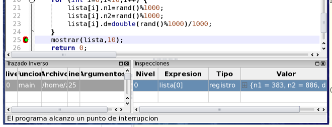

|
Parte 3: Paso 1
|
0
1
2
3
4
|
Coloque un punto de interrupción en la linea 25 (la llamada a la función mostrar) y presione F5 para ejecutar hasta ese punto. Allí tendremos cargados diez registros aleatorios.
Ingrese la inspección lista[0] en la tabla de inspecciones para observar el contenido del primer registro.

El valor de la inspección contiene los tres campos separados por comas.
Volver... Continuar...